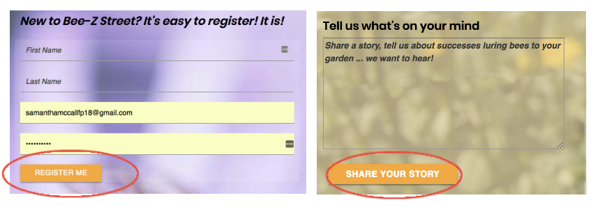

Want Great UX? Use Your Words

Posted September 10, 2018
Sixty years ago, Volkswagon's "Think Small" campaign changed the copywriter-designer work model. Today, companies are rediscovering copywriter-designer-developer synergy.
"If I have seen further it is by standing on the shoulders of Giants." — Isaac Newton
Why begin a UX post with an Isaac Newton quote? Stay with me. Newton was humbly admitting it wasn't mere personal brilliance that enabled him to become a key scientific mind of the 17th century. He also had the work of every scientist before him to draw from. Even the quote, while often attributed to him, dated back to at least the 12th century.
The bottom line: Today's breakthroughs and discoveries are reliant on the work and epiphanies of those who came before.
And so it is with UX.
In 1959, the DDB Agency launched an ad campaign that forever changed how copywriters and designers work together. Prior to the "Think Small" campaign, creatives were siloed. After the campaign, which Advertising Age recognised as the greatest to date, copy and design worked in tandem to set a tone and capture readers' imaginations.
Borrowing from the DDB playbook
I'd read about the looming deadline for SSL Certificates, but because I don't have an e-commerce site or even a database at this point I wasn't that worried about it. It was when I thought about that red triangle and "not secure" warning from a user perspective that I started to see how they might detract people from looking around my site. Clearly I needed to add the peace of mind the certificate brings.
Ironically, our Bee-Z Street prototype is hosted on Heroku, which extended the parent site's security to it. But this could be a problem we'll wrestle with in the future. I've already registed my domain and have it hosted on GoDaddy, so I'm responsible for obtaining my own SSL Certificate. Since I'm already up and running, it made sense to use my URL as a test case to see if I could obtain the certificate. In doing so, I utilized the problem-solving traits I've acquired to tackle everything from learning a new language to debugging errors.
Awareness
I'd read about the looming deadline for SSL Certificates, but because I don't have an e-commerce site or even a database at this point I wasn't that worried about it. It was when I thought about that red triangle and "not secure" warning from a user perspective that I started to see how they might detract people from looking around my site. Clearly I needed to add the peace of mind the certificate brings.
Zeroing in
Once I resigned myself to acquiring my certificate, the Googling began. "Free SSL Certificate" was one of my first searches. I soon discovered Let's Encrypt, which according to its site is a "free, automated, and open certificate authority brought to you by the non-profit Internet Security Research Group (ISRG)." Seemed legit.
But of course it wasn't as easy as that. Different hosts (the server your site sits on to make it available on the web) have varying levels of concern about Internet security. GoDaddy, which I pay to host my site, is on the low end of that spectrum. Long story short, I could add the coveted SSL Certificate, but my host doesn't make it easy.
Tenacity
Here's where the true problem solving began. I had to follow myriad directions. Run into dead ends. Find alternative routes. Create new files, passwords, and folders. Test and find things that weren't working. Retest. Take third and fourth alternative routes. But finally, after a few bad words and much trial and error, I succeeded. My site now welcomes users with a friendly green padlock and a warm and comforting "Secure." Check it out!
Commitment
More than once, I asked myself why I was going to the trouble of securing a non-commerce, database-less site. But I always went back to my users. I want to create a great experience. I want buttons to work and flow to make sense and most of all, I want people to come back! Good sites aren't an accident; they require thought, testing, constant tweaking, and a commmitment to good user experience. I hope that commitment is evident, because it's in every decision I make.
As for Bee-Z Street's case study? Stay tuned.